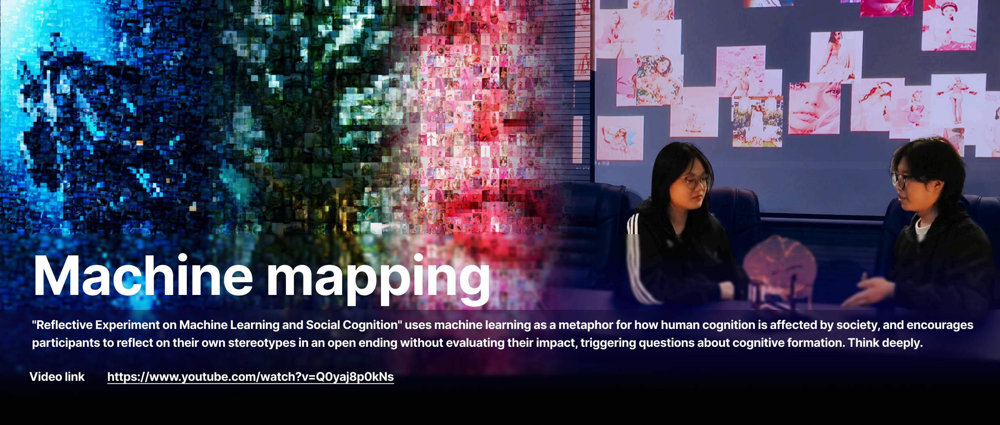
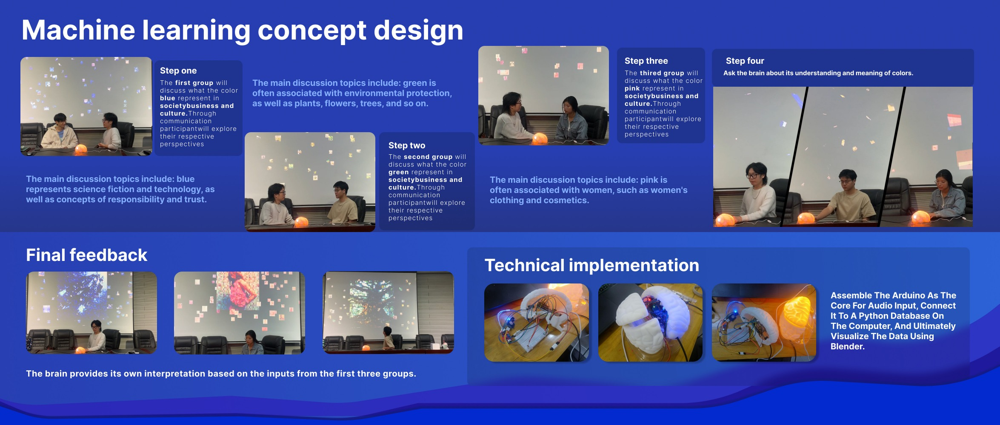
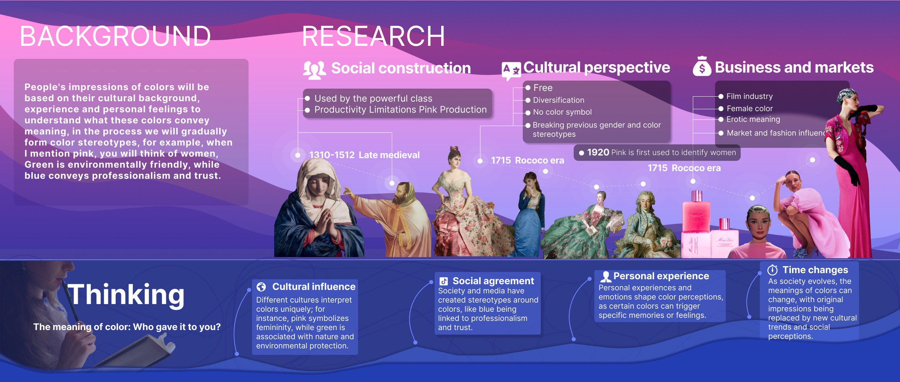
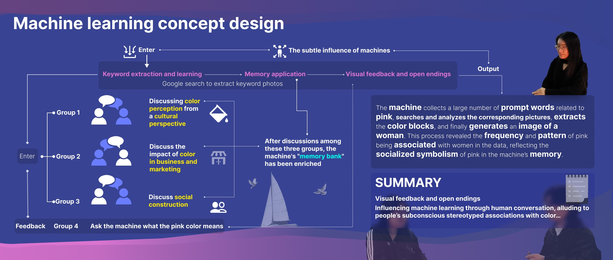
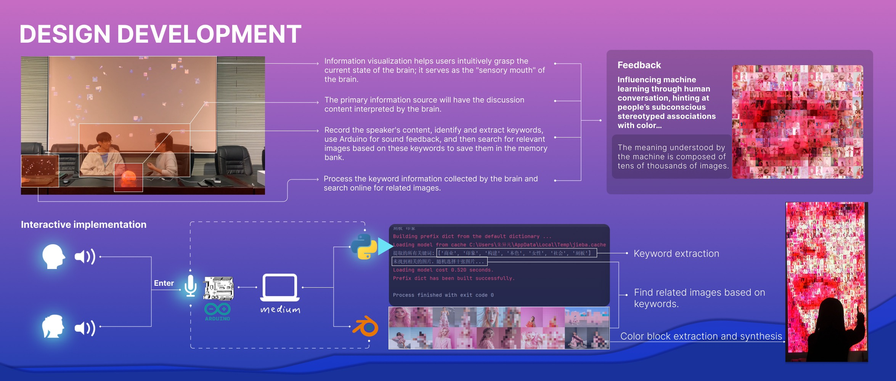
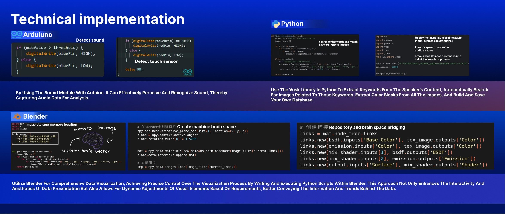

03 / AI + critical interaction
Machine Mapping
A reflective experiment using speech recognition, image search and 3D visualization to question how color stereotypes are formed and repeated.

Project context
A participatory AI interaction translating social input into visible machine memory.
Prototype & outcome

In this project
The case at a glance
A critical interaction experiment about social input and machine memory.
Context
Color meanings are shaped by culture, markets, social agreement and personal experience.
Challenge
The project needed to make machine learning and social cognition visible without forcing a single conclusion.
Process
Participants discussed colors, the system extracted keywords, searched images, processed color blocks and visualized machine memory in Blender.
Outcome
The outcome is a reflective prototype that reveals how social input can shape machine memory.
Page-by-page evidence
Complete Machine Mapping project archive
These pages show the cultural research, interaction logic and technical system.




Further reflections & competencies
What Machine Mapping demonstrates
Critical AI thinking
Questioning how human language, cultural assumptions and machine processes shape each other.
Participatory interaction
Designing staged discussion so participants influence the system without being pushed toward one answer.
Technical experimentation
Connecting speech recognition, keyword extraction, image search and Blender visualization into one prototype logic.
Data visualisation
Making invisible social input visible as a changing machine memory environment.